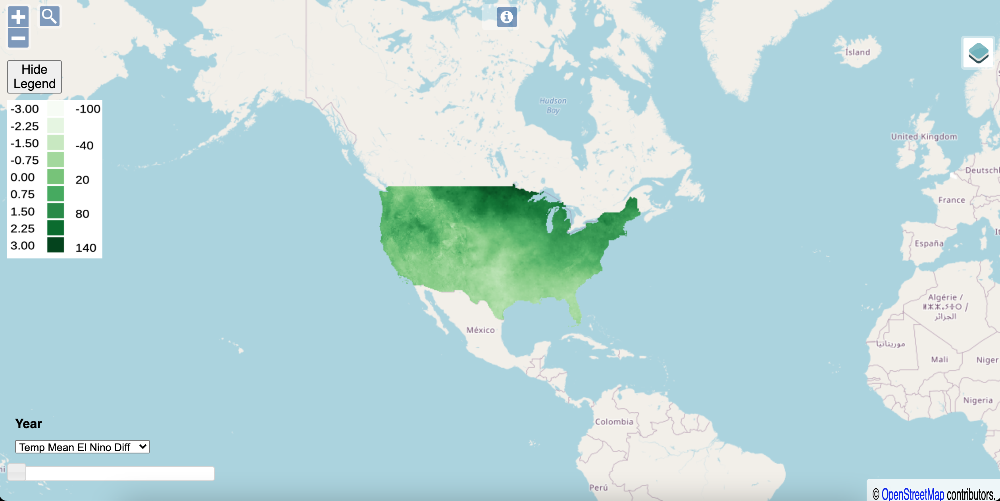

This series is me chronicling my adventure making a data pipeline. This pipe is outlined on GitLab here in the readme: https://gitlab.com/davleifer/polarbearGIS
This is the fourteenth part in a series used to build my website: https://www.davidjleifer.com/
Part 1: https://www.davidjleifer.com/blogs/part1.html
Part 2: https://www.davidjleifer.com/blogs/part2.html
Part 3: https://www.davidjleifer.com/blogs/part3.html
Part 4: https://www.davidjleifer.com/blogs/part4.html
Part 5: https://www.davidjleifer.com/blogs/part5.html
Part 6: https://www.davidjleifer.com/blogs/part6.html
Part 7: https://www.davidjleifer.com/blogs/part7.html
Part 8: https://www.davidjleifer.com/blogs/part8.html
Part 9: https://www.davidjleifer.com/blogs/part9.html
Part 10: https://www.davidjleifer.com/blogs/part10.html
Part 11: https://www.davidjleifer.com/blogs/part11.html
Part 12: https://www.davidjleifer.com/blogs/part12.html
Part 13: https://www.davidjleifer.com/blogs/part13.html
Part 14: https://www.davidjleifer.com/blogs/part14.html
This section covers the difference between two summary values for temperature and precipitation. The summary values we are building are mean rasters examining El Nino Southern Oscillation climate data between 1981 and 2014. First we will subtract the mean of neutral years from El Nino years. Then we will subtract neutral years from La Nina years.
Part 1: Importing the libraries and setting up our nino34 index
The first thing you need is Prism data of the mean precipitation and temperature for the month of January for years between 1981 and 2014. This can be downloaded here: https://prism.oregonstate.edu/
We also need the nino34 index for each of those years, which is a measurement of the sea surface temperature in the mid-equatorial Pacific ocean:
https://psl.noaa.gov/gcos_wgsp/Timeseries/Data/nino34.long.anom.data
The Python packages needed are Rasterio, GDAL, Numpy, SciPy, Glob, and Pandas.
To get started, we read in the nino34 index as a csv file and set elnino to be our index greater than positive .5, la nina to be less than negative .5, and neither to be the values between -.5 and .5.
import rasterio import rasterio.plot from rasterio.plot import show import numpy as np import pandas as pd import pyproj import scipy.stats as stats from glob import glob import os import gdal from osgeo import osr cwd = os.getcwd() #nino index df = pd.read_csv(cwd + '/data/nino34.csv') #el nino elnino = df[df['Index'] > .5] #la nina lanina = df[df['Index'] < -0.5] #neither el nino or la nina less = df['Index'] < .5 great = df['Index'] > -0.5 neither = df[less & great]
Part 2: Making a list of files from folders
Each year’s bil data is in it’s own folder. So we will set up a for loop to access the contents of each folder and append it to an empty array called folder_bil_list. In the for loop, we loop over the /data/mean/* directory, which we set previously as a data_dir_list variable with glob. The variable folder_bil accesses each folder in that list and is set with glob to the file path containing *bil. That variable is then appended into the empty array folder_bil_list. This list will be accessed many times throughout the course of this tutorial.
#create list of el nino files based on year from elnino varible data_dir = cwd + '/data/tmean/*' data_dir_list = glob(data_dir) #create a list of bil paths from each sub folder folder_bil_list = [] for i in data_dir_list: folder_bil = glob(os.path.join(i, '*.bil')) folder_bil_list.append(folder_bil)
Part 3: Creating a list of El Nino files
Now we need to make a list of only the El Nino files, based on the nino34 index value. We first convert the folder_bil_list array into a pandas data frame and set it to the variable df2. Then we convert the elnino index values years to a list and call it elnino_list. Next we create an empty array called df4. We use a for loop to loop over the elnino_list variable. In this for loop, we set another variable called df3 to see if the elnino_list year is in the df2 variable (which contains all of the .bil paths). Then we append that value (held in df3) to the empty array df4. After the for loop, we concatenate df4 into another variable called df5 and convert that variable to a list called elninolist2.
#see if year is in folder_bil_list df2 = pd.DataFrame(folder_bil_list) elnino_list = elnino['Year'].tolist() df4 = [] for nin in elnino_list: df3 = df2[df2[0].str.contains(str(nin))] df4.append(df3) df5 = pd.concat(df4) elninolist2 = df5[0].tolist()
Part 4: Creating a function to read in the bils as a list of Rasterio files
We create a function called read_file which will be used in a list comprehension to read in the list of el nino paths, held in the variable elninolist2. This is basically as numpy arrays, which are just list of lists. The list comprehension holds the list of Rasterio files in a variable called array_list. We then use numpy’s mean method to calculate the mean of these values and call it elnino_array_out. Because of the way we need to preserve our no data values, we set all -9999 values to -19998 in the variable elnino_array_out. When we subtract the neutral mean of means from the El Nino mean of means, we are subtracting -9999 from this -19998 value, essentially adding 9999 to it, leaving us with our original no data values of -9999 in the resulting numpy array. Isn’t matrix arithmetic fun!?
#calculate average of el nino arrays #https://gis.stackexchange.com/questions/244376/computing-mean-of-all-rasters-in-a-directory-using-python def read_file(file): with rasterio.open(file) as src: return(src.read(1)) # Read all data as a list of numpy arrays array_list = [read_file(x) for x in elninolist2] # Perform averaging elnino_array_out = np.mean(array_list, axis=0) elnino_array_out[elnino_array_out == -9999] = -19998
We then repeat this step for the neither years, eventually arriving at the mean of the neither years.
#create list of neither files based on year from neither varible neither_list = neither['Year'].tolist() neutral_df4 = [] for nei in neither_list: netural_df3 = df2[df2[0].str.contains(str(nei)+ "01_bil")] neutral_df4.append(netural_df3) neutral_df5 = pd.concat(neutral_df4) neither_list2 = neutral_df5[0].tolist() #calculate average of netural arrays # Read all data as a list of numpy arrays netural_array_list = [read_file(x) for x in neither_list2] # Perform averaging neutral_array_out = np.mean(netural_array_list, axis=0)
Part 5: Subtracting the neutral mean of means from the El Nino mean of means
We then subtract the neutral from the El Nino and set it as a variable named elnino_minus_neutral. This is then saved with a long GDAL series of code.
#perform tha difference elnino_minus_neutral = elnino_array_out - neutral_array_out #create gdal variable example map to get transformation and projection from example_tif = cwd + "/data/tmean/PRISM_tmean_stable_4kmM3_201001_bil/PRISM_tmean_stable_4kmM3_201001_bil.bil" data0 = gdal.Open(example_tif) #https://gis.stackexchange.com/questions/37238/writing-numpy-array-to-raster-file #write array with gdal dst_filename = cwd + '/data/tmean_elnino_minus_neutral/tmean_elnino_minus_neutral.tif' x_pixels = 1405 # number of pixels in x y_pixels = 621 # number of pixels in y driver = gdal.GetDriverByName('GTiff') dataset = driver.Create(dst_filename,x_pixels, y_pixels, 1,gdal.GDT_Float32) dataset.GetRasterBand(1).WriteArray(elnino_minus_neutral) # follow code is adding GeoTranform and Projection geotrans=data0.GetGeoTransform() #get GeoTranform from existed 'data0' proj=data0.GetProjection() #you can get from a exsited tif or import dataset.SetGeoTransform(geotrans) dataset.SetProjection(proj) dataset.FlushCache() band = dataset.GetRasterBand(1) band.SetNoDataValue(-9999) band=None dataset=None
Part 6: We’re not done!
Now we have to do the same thing for La Nina minus Neutral years.
#create list of la nina files based on year from lanina varible lanina_df2 = pd.DataFrame(folder_bil_list) lanina_list = lanina['Year'].tolist() lanina_df4 = [] for lan in lanina_list: lanina_df3 = lanina_df2[lanina_df2[0].str.contains(str(lan)+ "01_bil")] lanina_df4.append(lanina_df3) lanina_df5 = pd.concat(df4) lanina_list2 = lanina_df5[0].tolist() #calculate average of la nina arrays # Read all data as a list of numpy arrays lanina_array_list = [read_file(x) for x in lanina_list2] # Perform averaging lanina_array_out = np.mean(lanina_array_list, axis=0) lanina_array_out[lanina_array_out == -9999] = -19998 #perform tha difference lanina_minus_neutral = lanina_array_out - neutral_array_out #write array with gdal dst_filename = cwd + '/data/tmean_lanina_minus_neutral/tmean_lanina_minus_neutral.tif' x_pixels = 1405 # number of pixels in x y_pixels = 621 # number of pixels in y driver = gdal.GetDriverByName('GTiff') dataset = driver.Create(dst_filename,x_pixels, y_pixels, 1,gdal.GDT_Float32) dataset.GetRasterBand(1).WriteArray(lanina_minus_neutral) # follow code is adding GeoTranform and Projection geotrans=data0.GetGeoTransform() #get GeoTranform from existed 'data0' proj=data0.GetProjection() #you can get from a exsited tif or import dataset.SetGeoTransform(geotrans) dataset.SetProjection(proj) dataset.FlushCache() band = dataset.GetRasterBand(1) band.SetNoDataValue(-9999) band=None dataset=None print("finished tmean_LaElNeu_diff.py")
Part 7: The final and easiest step
Now you have to copy/paste this code and change all the “tmean” into “ppt”. Control find and replace should do the trick :). Then display in a method of your choice!

This series is me chronicling my adventure making a data pipeline. This pipe is outlined on GitLab here in the readme: https://gitlab.com/davleifer/polarbearGIS
This is the fourteenth part in a series used to build my website: https://www.davidjleifer.com/
Part 1: https://www.davidjleifer.com/blogs/part1.html
Part 2: https://www.davidjleifer.com/blogs/part2.html
Part 3: https://www.davidjleifer.com/blogs/part3.html
Part 4: https://www.davidjleifer.com/blogs/part4.html
Part 5: https://www.davidjleifer.com/blogs/part5.html
Part 6: https://www.davidjleifer.com/blogs/part6.html
Part 7: https://www.davidjleifer.com/blogs/part7.html
Part 8: https://www.davidjleifer.com/blogs/part8.html
Part 9: https://www.davidjleifer.com/blogs/part9.html
Part 10: https://www.davidjleifer.com/blogs/part10.html
Part 11: https://www.davidjleifer.com/blogs/part11.html
Part 12: https://www.davidjleifer.com/blogs/part12.html
Part 13: https://www.davidjleifer.com/blogs/part13.html
Part 14: https://www.davidjleifer.com/blogs/part14.html